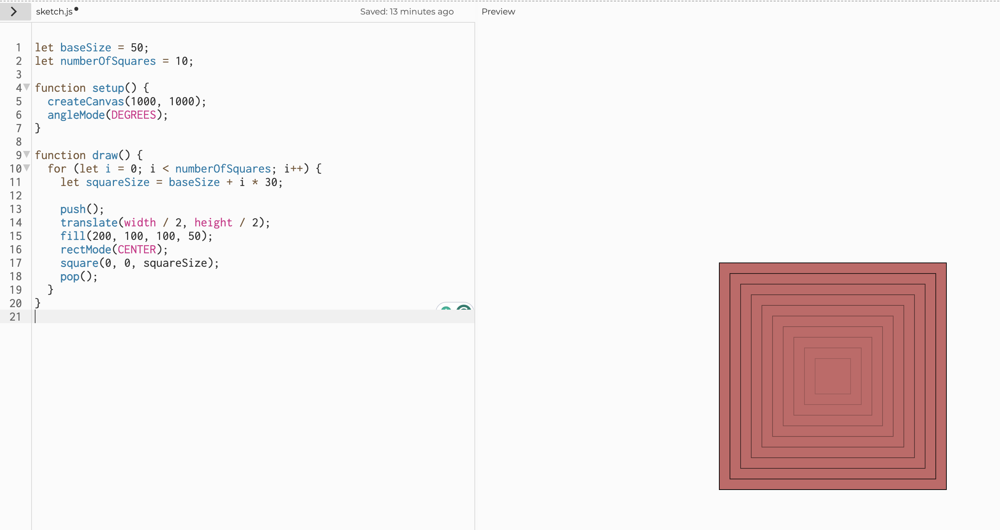
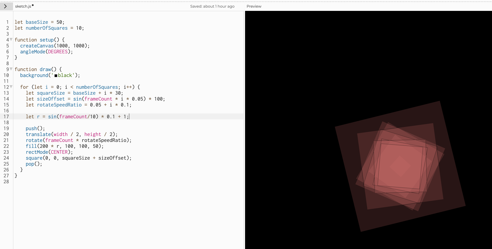
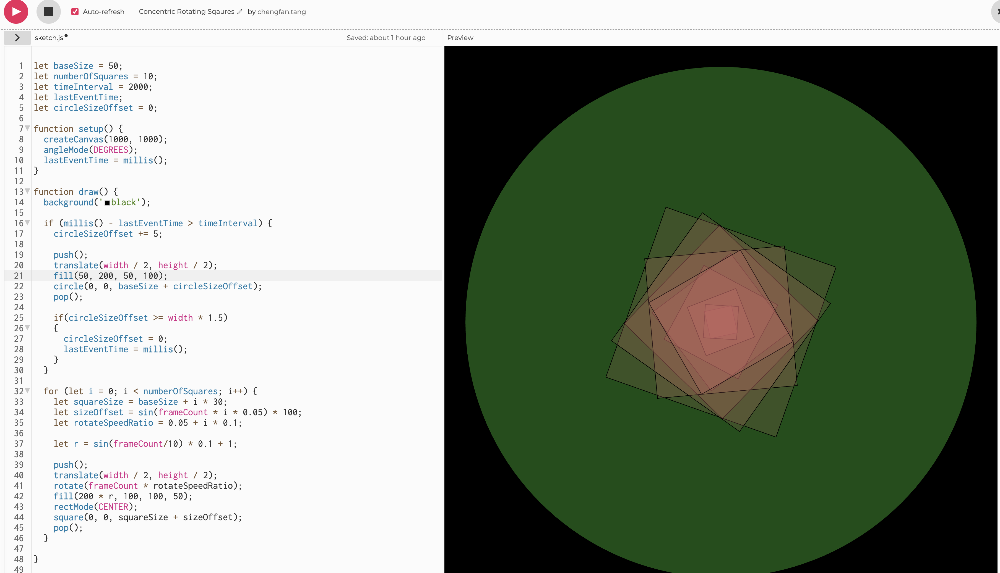
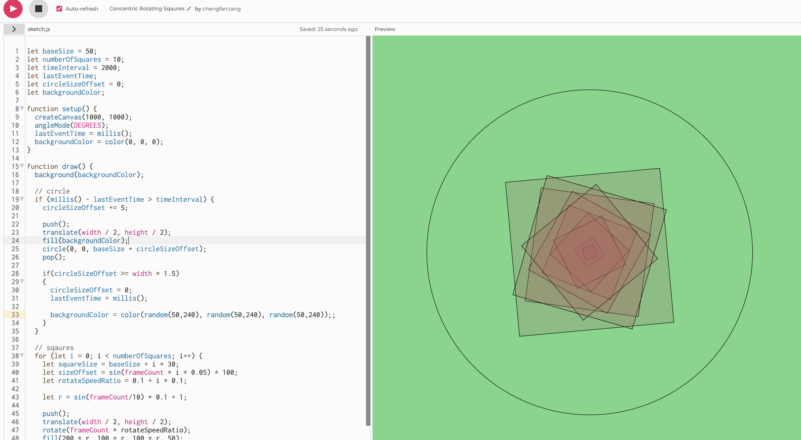
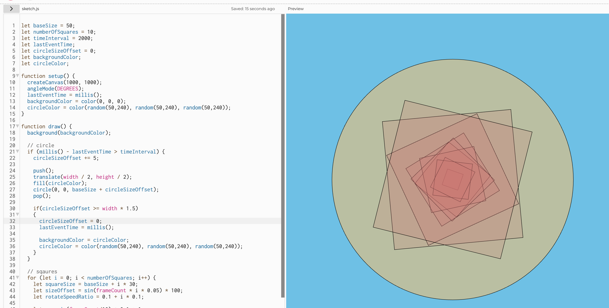
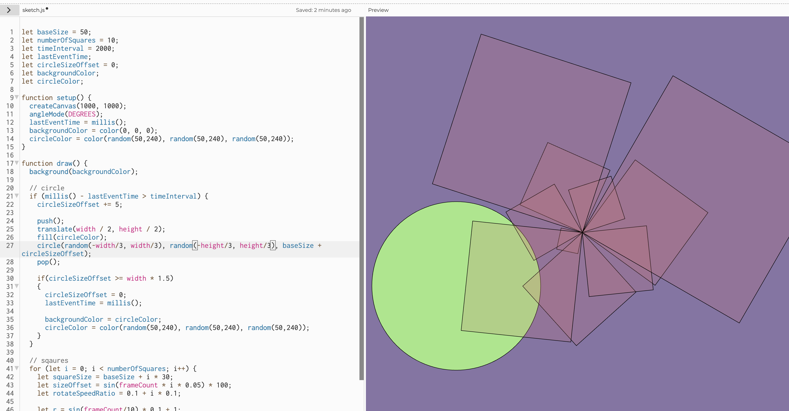
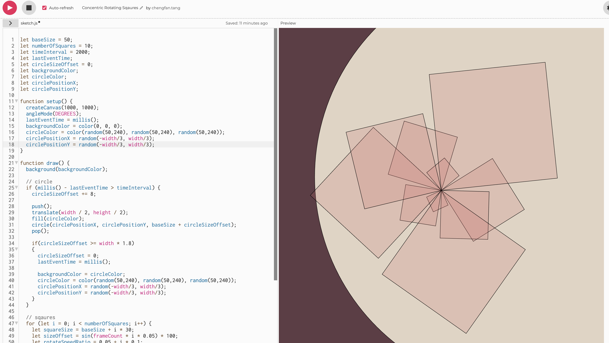

My p5.js creation, Rotating Squares
Process
Since I have done concentric circles in the last homework, I want to make concentric squares this time and change the color and rotate them. I started by creating some sqaures with a bit transparency and vary each size.

Next, I made sqaures to rotate by using rotate() function with frameCount. However, I wanted them rotate in different speed, so I added a speed difference in each rotate.

Adding the repeated motion of the squares, I used a sin() function to change the size of each square, so that they change size up and down like the breathing effect. I also used the sin() function to change the color a little bit for red RGB value by about 10%.

Now I have something to change with a sin() function, now I need make something to move every so often. My immediate idea was to have a circle change in size from small to big and cover the entire background. To achieve this, I have been playing with the time millis() function. I record an event happening time, use the current time (millis()) to substract the event time. If the difference is more than my time interval, I play the circle changing animation, then reset event happing time to current time, and circle size offset back to 0.

This just not fun enough. I want the color of the circle to change as well, and maybe the background color too. So ideally, the background color will change to the circle color, and the next circle can use a new random color. So I created a variable called backgroundColor to store a random color, and use that to draw the background and circle. When the circle is big enough to cover the entire background, the color of the background will change. Appearently, this was not working correctly. The background changes before the circle and the circle becomes the same color as the background.

The problem was that I was using the same color to create the background and draw the circle at the same time, this is not right because they will always be the same color. So I created a new variable to store the circle color and made that a random RGB value. Then I only set the background color to the circle color after the animation is finished. The circle will use a new random color for the next animation. This created the right effect I wanted.

I changed the rectMode() to not center so the rotating looks a bit more interesting. I also want the circle to grow not from the center, but a random place. So I added the randomness to the circle drawing position, however, it drew the circle in random places many times during the animation, not consistant in one but random position in the next animation play.

To fix this problem, I created position variable to hold the position of the circle drawing, and only change that position when the circle is big enough to cover the entire background. This way, the circle will always grow from the same position in the animation play. I like the way it is now.